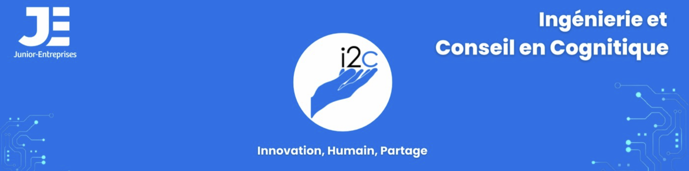

Junior-Entreprise · ENSC
Comptable
i2c
i2c — Ingénierie et Conseil en Cognitique — est la Junior-Entreprise de l'ENSC, et la seule spécialisée dans la prise en compte du facteur humain au cœur de l'innovation. En tant que comptable, j'assure la santé financière de la structure et la conformité de ses obligations légales.
Contexte
Une Junior-Entreprise unique en son genre
L'ENSC étant la seule école d'ingénieurs en cognitique en France, i2c est par définition la seule Junior-Entreprise spécialisée dans l'intégration du facteur humain à l'innovation technologique. Elle met en relation des élèves ingénieurs avec des professionnels dans le cadre d'études rétribuées, couvrant des domaines variés.
En tant que comptable, je suis le pilier financier invisible qui permet à la structure de fonctionner en toute conformité. Sans une comptabilité rigoureuse, aucune étude ne pourrait être signée, aucun étudiant rémunéré, aucun client facturé. Ce rôle m'a donné une vision globale et concrète du fonctionnement financier d'une entreprise.
Missions techniques
Le détail de mes responsabilités
Les missions comptables au sein d'une Junior-Entreprise sont exigeantes et couvrent l'ensemble du cycle comptable, de l'enregistrement des opérations à la clôture annuelle.
État de Rapprochement Bancaire mensuel
Établissement mensuel permettant de réconcilier les mouvements du compte bancaire avec les enregistrements comptables et de détecter toute anomalie.
Édition des écritures comptables
Saisie et contrôle de l'ensemble des opérations comptables : achats, ventes, notes de frais, virements, en respectant le plan comptable général.
Grands livres et balances
Édition des grands livres (détail de chaque compte) et des balances (récapitulatif des soldes) pour le suivi et le contrôle interne de la comptabilité.
Établissement et gestion du budget
Construction du budget prévisionnel, suivi des écarts entre prévisions et réalisations, et pilotage financier régulier auprès du bureau de la JE.
Mise en place de la facturation électronique
Déploiement et gestion du système de réception et d'émission de factures électroniques, en conformité avec les obligations légales en vigueur.
Relecture des BV et BRC
Vérification des Bulletins de Versement et des Bordereaux Récapitulatifs des Cotisations avant envoi aux organismes sociaux, pour garantir leur conformité.
Préparation de l'audit & passation de poste
Constitution du dossier d'audit annuel, revue de la comptabilité pour s'assurer de sa fiabilité avant contrôle, et transmission documentée à la future équipe.
FEC, REX & clôture comptable
Génération du Fichier des Écritures Comptables (FEC), rédaction du Retour d'Expérience (REX) de fin de mandat, et réalisation de la clôture comptable annuelle.
Compétences transversales
Au-delà des chiffres
Rigueur & conformité
Respect strict des obligations légales, des délais réglementaires et des normes comptables applicables aux associations et Junior-Entreprises.
Maîtrise d'Excel
Utilisation avancée de tableurs pour la construction des budgets, des tableaux de suivi et la production des documents comptables.
Gestion des échéances
Planification et respect des délais comptables (déclarations TVA, bilans, audits…) dans un contexte associatif où les responsabilités sont entièrement bénévoles.
Travail en équipe
Collaboration étroite avec le bureau exécutif et les autres pôles de la JE, communication régulière sur la situation financière pour éclairer les décisions collectives.
Ce que j'en retire
Une formation par la pratique
Tenir la comptabilité d'une Junior-Entreprise, c'est apprendre la finance d'entreprise en conditions réelles, sans filet. Chaque erreur a des conséquences concrètes — une déclaration incorrecte, une facture mal enregistrée, un budget mal tenu. Cette responsabilité m'a transmis une discipline financière solide et une capacité à comprendre les flux économiques d'une structure.
Cette expérience illustre une conviction forte : les ingénieurs cogniticiens ne se contentent pas de concevoir des interfaces ou d'analyser des usages. Ils sont capables de prendre en charge des fonctions transversales exigeantes — ici financières — avec la même rigueur qu'ils appliquent à leurs projets techniques. La cognitique, c'est aussi savoir naviguer dans des domaines multiples.
